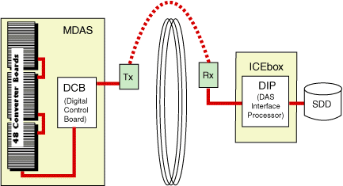
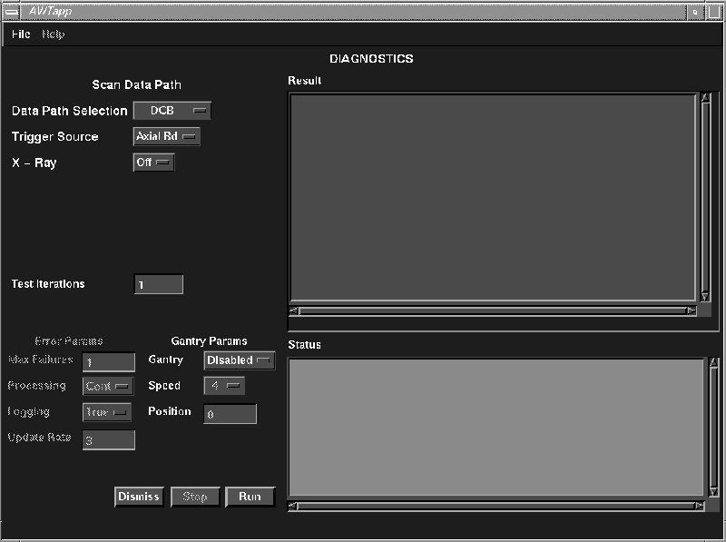
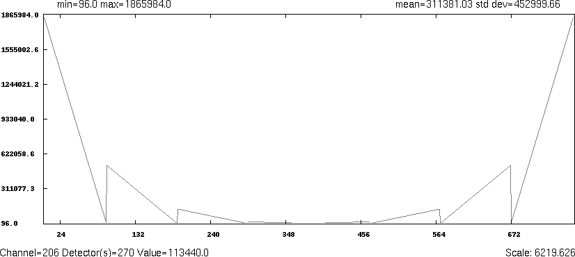
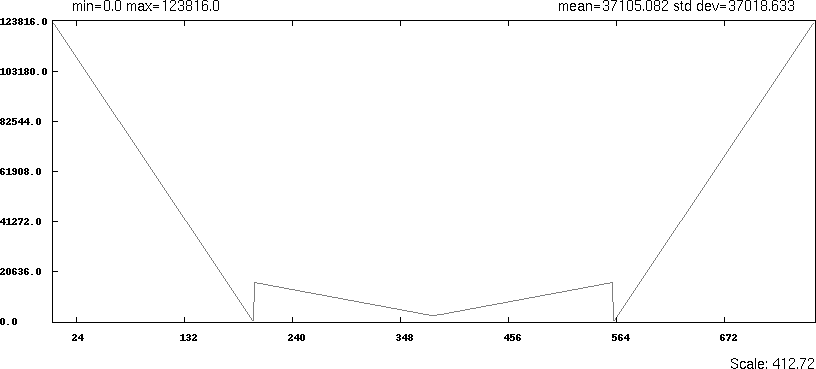
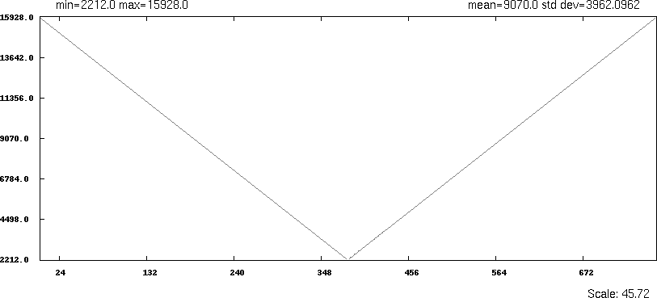
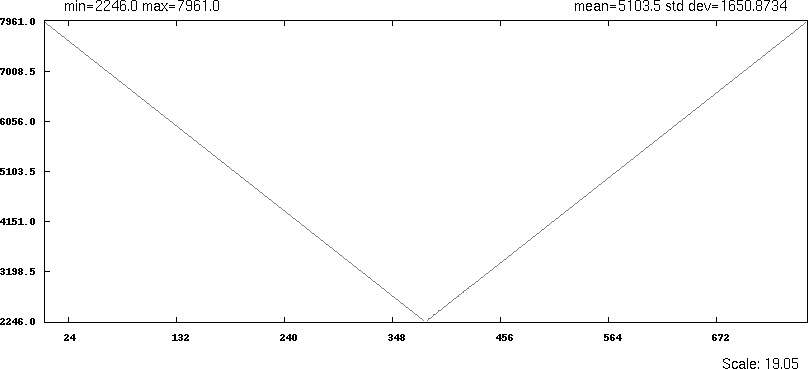
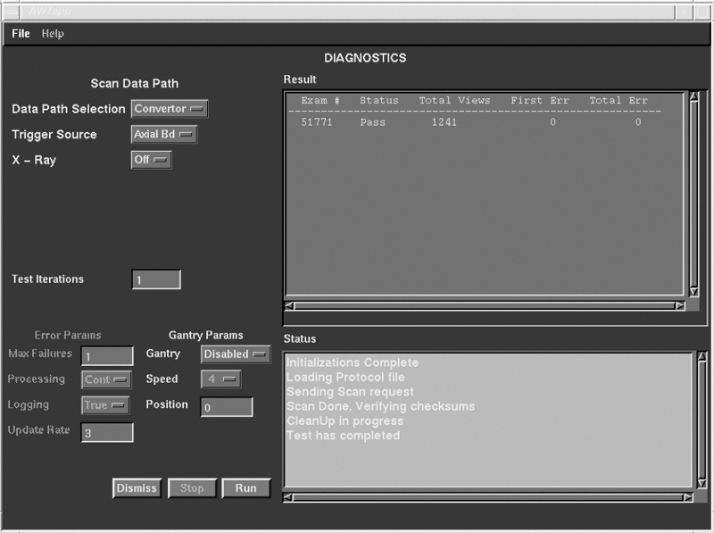
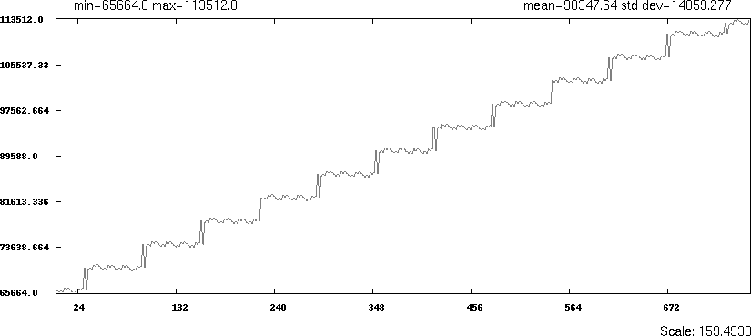
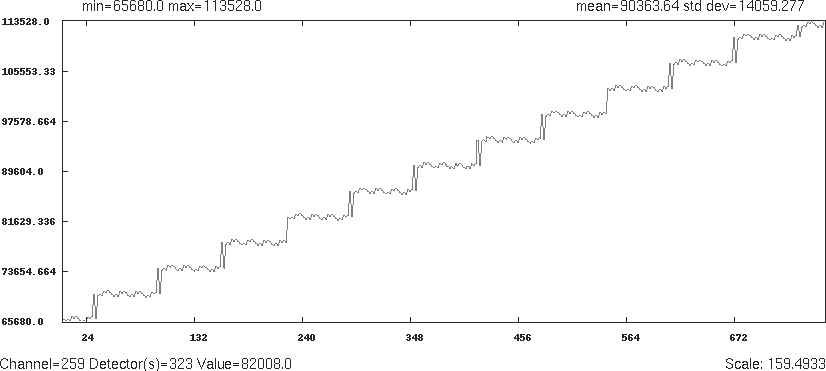
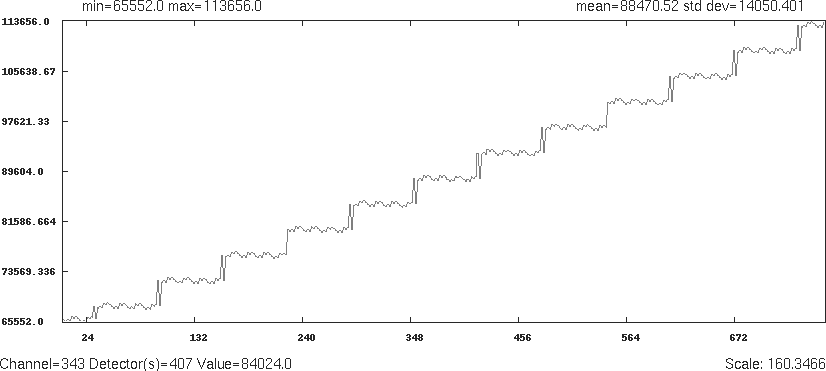

Operating Documentation
Direction 5181178-800, Rev# 16
BrightSpeed Select Service Methods Gen
Module Version 1.0, Version Date 2/16/07
Operating Documentation |
This diagnostic tests and isolates problems related to scan data generated in the MDAS and received at the scan data disk. It generates known scan data from either the DCB or from each of the converter boards and send this data to the DAS interface processor board and store it on the scan data disk for analysis. The data path is shown in Illustration 1.
Illustration 1: Scan Data Test Paths

The Main Diagnostic Menu selection has several options:
Data Path Selection can be either from the DCB or converter boards (Illustration 2).
DCB: A known data pattern is sent from the DCB to the scan data disk. After the data is collected, the scan file is check summed and compared to a known checksum value. If a discrepancy is found, the test will fail. This will indicate that the path between the DCB and the scan data disk is bad.
Refer to the system error log for further details on what may be the cause. Further attempts to isolate the problem may include:
Running DIP Diagnostics, with and without the loop-back cable
Bypassing the RF slip ring by connecting the DCB fibre output directly to the DIP board.
Running DCB Diagnostics
Check DIP stats for FEC error corrections and attempts. This step should always be done, even if the test passes to see if there is a marginal error condition that FEC is correcting.
Record the exam number the test uses and plot the data using Scan Analysis to look for errors. Look at ALL rows. ALL rows may not look the same. Refer to Illustration 3, Illustration 4, Illustration 5, and Illustration 6, for four examples of what rows should look like.
Converter Boards - A known value is input to the front-end of each of the 96 converter boards. Again, this data is sent to the scan data disk and check summed and verified for any discrepancies. Using the converter board path will help isolate if the problem is between the converter boards and the DCB. The reason why the DCB is the default option is that if the DCB data path fails, then most likely the converter data path will fail also. Fix the DCB data path first (refer to Illustration 7).
See Illustration 8 through Illustration 11, for example row output screens.
Trigger Source - Defaults to the axial board, which is the only option at this time. Future releases may include the DCB as an internal trigger source to help isolate trigger related faults.
X-Ray - This option enables a low technique scan to determine if rotor and high voltage is the cause of data errors. If selected, x-ray can be initiated during data collection to flag HV related issues during data collection. Technique shall be kept to a minimum and follow all x-ray initialization constraints, such as techniques, scan times, and tube cooling. Default test prescription will NOT have x-ray. For testing with x-ray, scan technique shall be 80KV/20mA/1 sec/filter in closed position, and collimator at minimum opening. This option is not for use by InSite without operator initialization utilizing the Scan Push button. The default selection is No X-Ray.
Gantry Rotation - This test is functional in a stationary gantry utilizing DAS internal triggers. It is functional in a rotating gantry at various gantry speeds (0.8, 1.0, & 2.0 seconds), using system generated triggers. This feature is chosen via the GUI, and requires the scan push-button to enable the rotation. Stationary data collection is the default option and primarily used by InSite.
Illustration 2: DCB Data Path Selection Screen

Illustration 3: DCB Data, Means Example

Illustration 4: DCB Data, Means Example

Illustration 5: DCB Data, Means Example

Illustration 6: DCB Data, Means Example

Illustration 7: Converter Data Path Selection Screen

Illustration 8: Converter Data, Means Example
Illustration 9: Converter Data, Means Example

Illustration 10: Converter Data, Means Example

Illustration 11: Converter Data, Means Example
